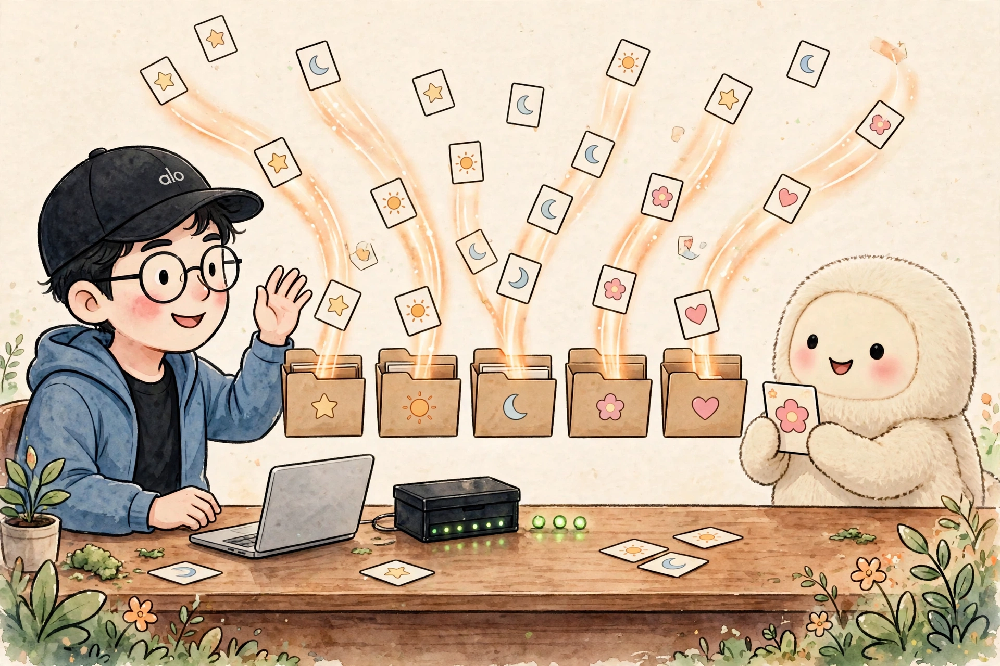
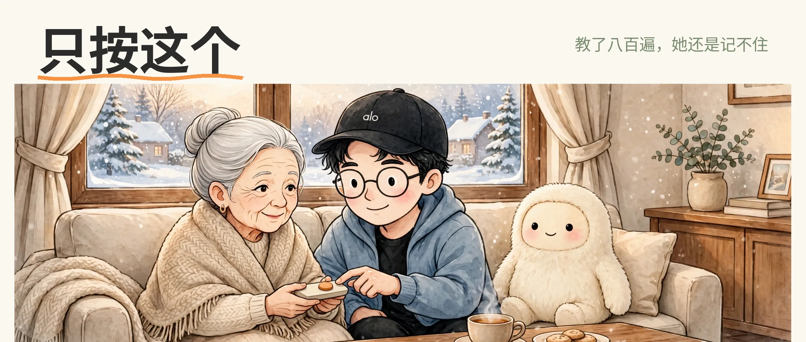
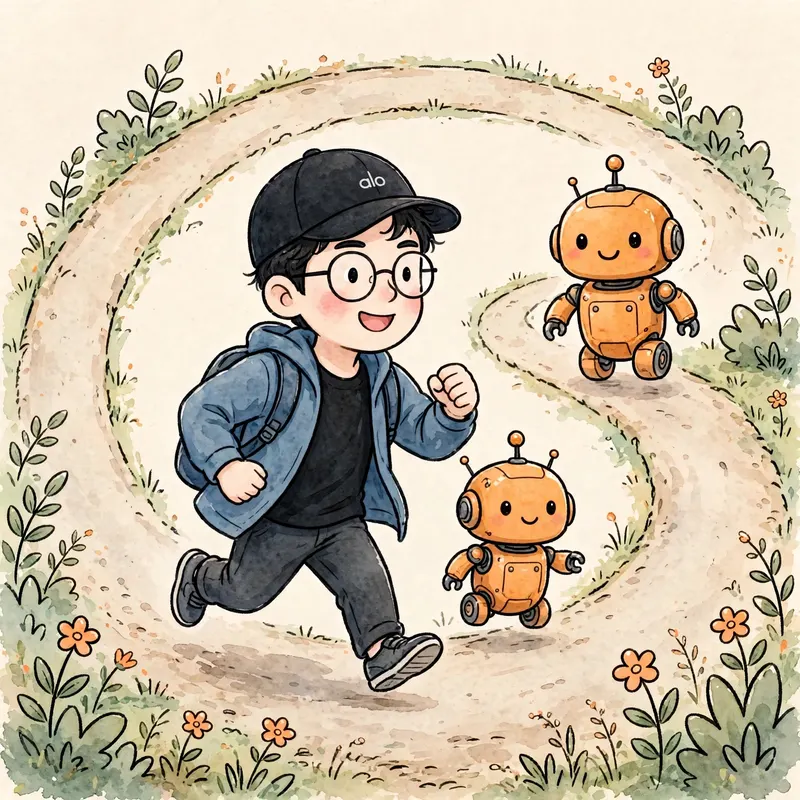

他花几十万，给幼儿园装了个本地AI
幼儿园每天往家长群里发十几个视频，全班混在一起没法看。黄小木花几十万、一个多月，给园里装了套本地 AI：Mac mini 采集、群晖存储、本地模型按孩子人脸分诊，每周给每个娃剪一支专属集锦，数据不出园。最值得带走的，是他拆痛点、定合规、选工具的顺序。
看橘子哥 · 3 分 30 秒打开全文 →
只放核验过、还领得到的 · 每条都标截止时间，过期撤下
先到先得 · 12 月 18 日结束图片 / 视频 / 音频 / 3D 生成都能花，橘子哥 11 月 24 日实测到账。11 月 25 日核验 · OpenGame 官方
申请截止 12 月 2 日 04:00Devpost 提交申请领 4000 credits（需身份核验，审核约 48 小时）；12 月 4 日前兑换，可用到 12 月 31 日。11 月 25 日核验 · Devpost 官方
12 月 4 日–10 日线上开源挑战周，全程免费参加，完成挑战赢数字 / 实体周边。11 月 25 日核验 · MLH 官方
报名截止 12 月 31 日10 亿混元 Token＋10 万张生图＋6 个月云开发环境，小程序开发者免费领（限小程序内用）；已有环境改领 120 元代金券。11 月 25 日核验 · 微信开放文档
羊毛只上核验过的：数字、条件、截止时间都对着官方页面确认过；过期或领完的会撤下，不留空架子。
真实 Agent 案例 · 提示词拿走就能用
作者给 Grok Bot 定了收入目标和两条红线，用调研、写作、SEO、发布四个专职子 Agent 建了一个 AI 用例目录站，10 月 28 日买域名、30 日即被收录，30 天联盟收入 $1,422。
围绕[细分领域]建一个联盟营销站并持续运营，用调研、写作、SEO、发布四个专职子 Agent 分工。先起草页面与发布计划，每批内容上线前、注册任何联盟账号前都先给我看、等我批准。每周汇报已发布页面数、流量与收入，供我复核。
Build and run an affiliate site about [niche] using specialised sub-agents for research, writing, SEO and publishing. Draft the pages and a publishing plan, and show me each batch for approval before anything goes live or any affiliate account is signed up for. Each week, report pages published, traffic and revenue so I can review it.
作者填问卷建了三个 Grok Bot：Alfred 管私人助理，Gordon 改写 Newsletter 并回 YouTube 评论，Florence 谈品牌合作；有人找 Alfred 签 NDA，他直接把任务转给了 Florence。
做我的助理，负责[我的工作，例如 Newsletter 与 YouTube 频道]。每[天/周]拿我最新一期[Newsletter]改写成[形式，例如 3 条社媒帖子加一段短视频脚本]，并按我的语气[语气描述]起草[频道或平台]上新评论的回复。完成时只交一份待审草稿清单，什么都不直接发。发布、回复、发消息或签署任何东西之前，先给我看原文、等我批准。
Act as my assistant for [my work, e.g. newsletter and YouTube channel]. Each [day or week], take my latest [newsletter issue] and turn it into [format, e.g. 3 social posts and a short video script], and draft replies to new comments on [channel or platform] in my voice, which is [tone description]. Done means a single list of drafts for me to review, nothing posted. Before posting, replying, sending any message or signing anything, show me the exact text and wait for my approval.
作者在 Chrome 里建了一个 Claude 项目，拉通饮食与运动睡眠数据，每天 7 点定时发晨间简报：昨天与本周均值、更新后的步数与蛋白目标、饮食建议和当日训练。
用我已登录的浏览器，打开[Cronometer]和[Fitbit 或 Google Health]，拉取我最近[天数]天的[热量、宏量营养素、步数、睡眠、体重]。汇总成一张表或简单仪表盘，放在[Google 表格或本地 HTML 文件]里，每天一行。不要改动这些网站上的任何设置或数据；汇总视图完成、并告诉我哪些天缺数据后即停止。
Using my logged-in browser, open [Cronometer] and [Fitbit or Google Health] and pull my [calories, macros, steps, sleep, weight] for the last [number] days. Put them in one table or simple dashboard in [Google Sheet or local HTML file], one row per day. Don't change any settings or data on those sites, and stop when the combined view is ready and you have told me any days with missing data.
一位营销者用 Claude 跑整条内容线：刷社交媒体找真实对话、研究 SEO 选题、写文章、生成短视频；另一位跑定时任务，每 6 小时自动发一条 TikTok，全程无人值守。
我为[我的业务/产品]做营销，它帮[目标人群]解决[问题]。找出 10 条最近的社交对话，其中有人在问[话题]相关问题；研究 5 个匹配的 SEO 选题；为最佳选题写一篇文章，加一段 30 秒 TikTok 脚本。最后给一张内容计划表，列出每篇内容的渠道与建议发布时间（每[6]小时一条），发布或发表任何内容前先停下来等我批准。
I run marketing for [my business/product], which helps [target audience] with [problem]. Find 10 recent social conversations where people are asking about [topic], research 5 SEO topics that match, and draft one article for the best topic plus a 30-second TikTok script for it. Finish with a content plan table listing each piece, its channel, and a proposed posting time every [6] hours, and pause for my approval before anything is posted or published.
一位用户用 Aqara 无线小开关作 Home Assistant 的物理触发：早上按一下灯光渐亮、放提醒与歌单；晚上按一下灯光渐暗、放睡前歌单、锁门；猫砂盆循环结束还会自动派扫地机去清理。
帮我做两个 Home Assistant 自动化。第一，给我[孩子]做一个晨间流程，按[按钮或设备]触发，执行[灯光、音乐、提醒等]。第二，当[触发条件，例如猫砂盆完成一次循环]时，派我的扫地机器人[型号]去清扫。给我带实体名占位符的 YAML，说明怎么找到正确的实体；两个自动化都能直接粘贴测试时即停止。
Help me create two Home Assistant automations. First, a morning routine for my [child] triggered by pressing [button or device] that does [lights, music, announcements, etc.]. Second, send my robot vacuum [model] to clean when [trigger, e.g. the litter box finishes a cycle]. Give me the YAML with my entity names as placeholders, explain how to find the right entities, and stop when I have both automations ready to paste in and test.
来源 agentusecases.ai 每日收录 · 按「能省时间、能赚钱、今天就能抄作业」筛过，纯炫技的不要。

幼儿园每天往家长群里发十几个视频，全班混在一起没法看。黄小木花几十万、一个多月，给园里装了套本地 AI：Mac mini 采集、群晖存储、本地模型按孩子人脸分诊，每周给每个娃剪一支专属集锦，数据不出园。最值得带走的，是他拆痛点、定合规、选工具的顺序。

电视亮着，她对着屏幕说话，护工说她以为在跟儿子视频。可儿子其实早就把遥控器说明书做成只剩一个键了，因为教了八百遍她还是记不住…Claude 只回了三个字：「我很抱歉。」

在 linux.do 看到 fal 第三批兑换码，注册完却找不到入口——我直接把浏览器交给了 Muse：找入口、填码、确认到账，我全程在旁边看。这笔额度还能拿去做开发素材，结尾还有个小惊喜。

把 Muse 当云端包工头，串起 Gemini 写脚本、Google Flow 生视频、豆包语音配音——每天只花 3 分钟扫码确认，视频自动发。成本账、三条红线和踩过的坑，全拆给你看。

第一次跟 Muse 打语音电话：本来是谈正事的，它先让我挑声音、给我讲段子，还记得我家的猫；笑着聊着，正事一件没落，全办完了。全程没听出一点机器人味——这是我今年用 AI 最惊讶的一次。

用 Muse 免费额度做一部 24 秒三镜短片：定妆照、参考图改场景、图生视频、拼接成片、声音处理——每一步都附实测提示词（可直接抄）和验收清单。

十九岁的王大可，账号被封的五十天里给一家年营收千万的教育公司做 AI 化转型：一个人补六个岗位，把学情报告从五道人工转手做到表单一提交自动开跑。他留下的分工原则只有一句——Agent 能走的流程走完，剩下的人来定。

宝玉用自己做了三年的字幕翻译软件，讲透 AI 产品怎么做：盯着模型能力边界找需求，连闯能力、成本、价值三关；最小验证、推倒重设计；人的价值在定义问题和验收结果两头——像训练大模型一样训练自己。

前腾讯程序员西堂：副业一年挣不到一万，押中 AI 视频换来第一单，靠培训筛人攒下团队；漫剧风口塌了果断收手，最后在公众号商单上跑通月入十万。

选平台这个问题问反了 — 先盘清你的核心资产、再想清靠什么赚钱、最后才匹配平台机制。小红书争「有用」、抖音争「停留」、X 争「生态位」。

时隔五年再访老客户：一家数字医学公司，怎么把最强的 AI 用进全公司。

不到 20 分钟，帮一位外企高管搭好整套 AI 环境、用上专属 AI。

大学室友的工厂年产值上亿 — 他每个月只多花 200 美元，把 AI 用进了生产。

AI 游记第一站：到杭州看 AI 怎么走进影视制作。